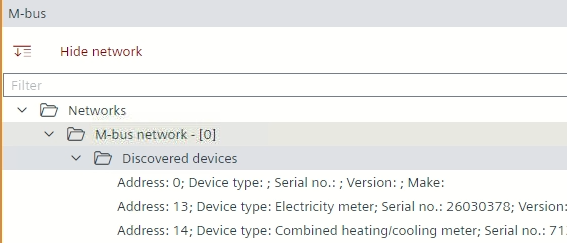
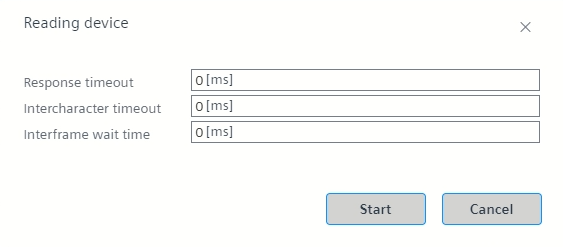
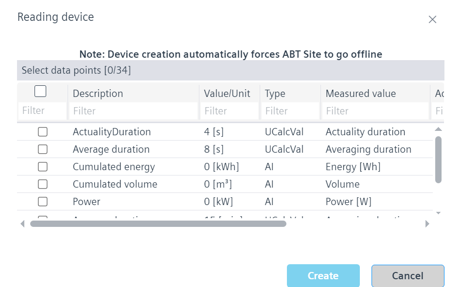
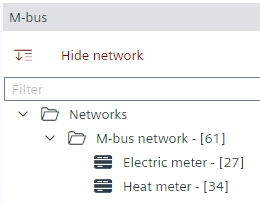
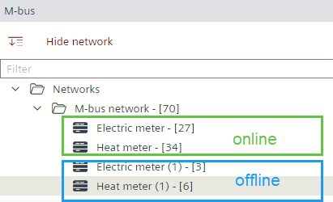
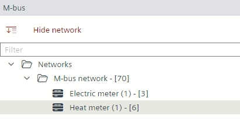

Reading the serial number from online device data and using it in the offline engineering
Describes the workflow for transferring the network address and serial number from an online device to an offline device created from the library.
Note: Another method is to first create the devices offline from the library and then connect them to the online data.
- Before adding an M-bus network, make sure to configure and load the PXC5/7device.
Configure and download.
- Go to Engineering.
- Open the M-bus task.
- Click Add network.
- Select the M-bus (MBUS) port in the Port field and click OK.
- You have added an M-bus network.
- Do the following:
- Select the M-bus network.
- Right-click and select Start .
- The network scan starts and lists the devices in the Discovered devices folder.
Note: This may take some time until all M-Bus devices are listed.
M-bus network scan. - Right-click the device and select Read device data.
- The Reading device dialog box displays, where a trace of all the online device data points is read. All inputs initially display as 0.

- Select the Response timeout, Intercharacter timeout and Interframe wait time in the respective fields and click Start.
- After a few seconds, the list of the data points in the device displays.
- All discovered data points are listed and ABT Site will propose a BACnet object mapping.

- Select the required data points and click Create.
Note: Completing the read device data process and creating a device will be forced by pause the Play sequence. - The M-bus editor is paused, goes to offline mode and the created M-bus device is visible under the M-bus network.

- Select the Library view on the right.
- From the Field devices > M-bus folder, drag an M-bus device from the library to the M-bus network folder.
- The number in the square brackets represents all used data points by the device. This example shows a different number of online and offline data points. However, this can vary from device to device, so the same number of data points could also be displayed.

- Select the Properties view on the right.
- From the created device transfer the Network address and the Serial number to the respective text fields of the unconfigured template.
- Delete the device from which you copied the network address and serial number.
- The M-bus network only shows devices that have been used from the library.

- Click Start to perform a delta download to the PXC5/7device.
- The M-bus devices are configured and ready for operation.
- For the graphical representation of a meter in Desigo CC, the data points for the Logical View must be correctly assigned to the meter.
Preparing M-bus meters for Desigo CC graphics